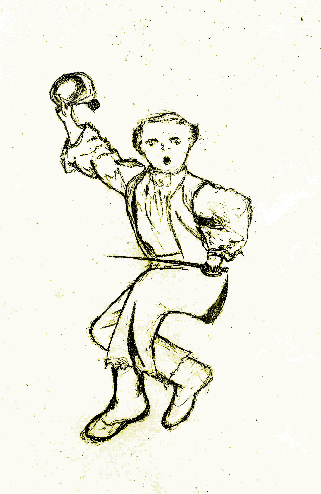
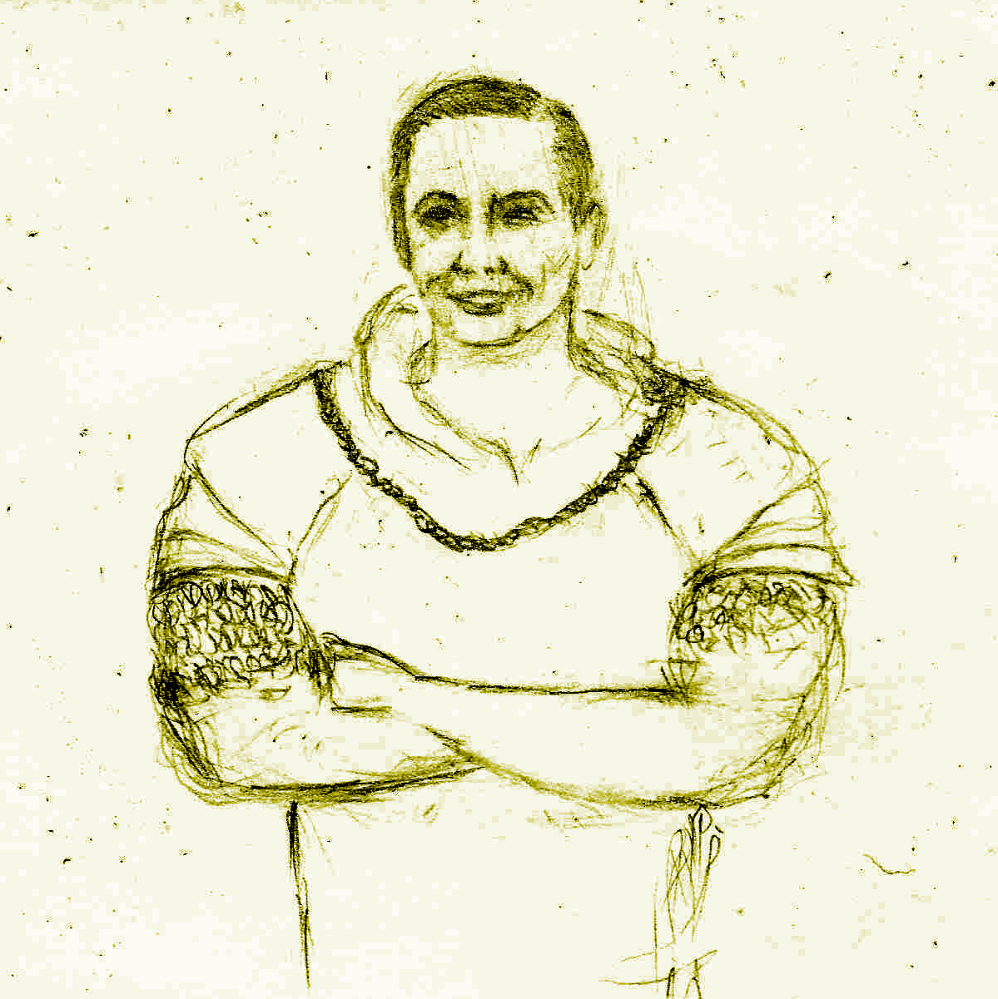
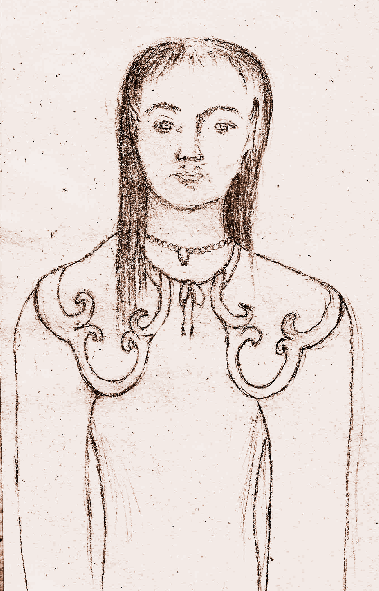
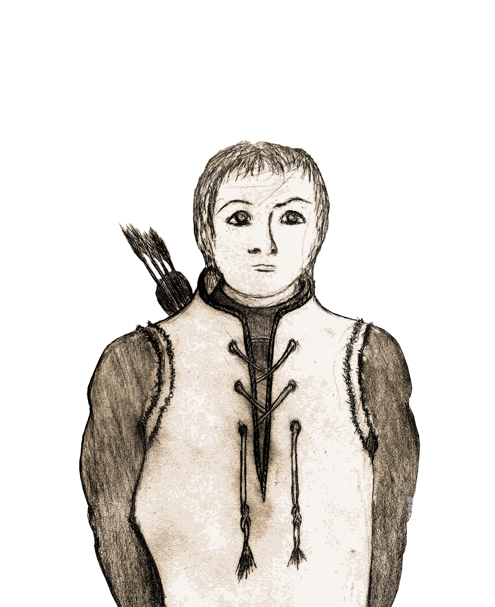
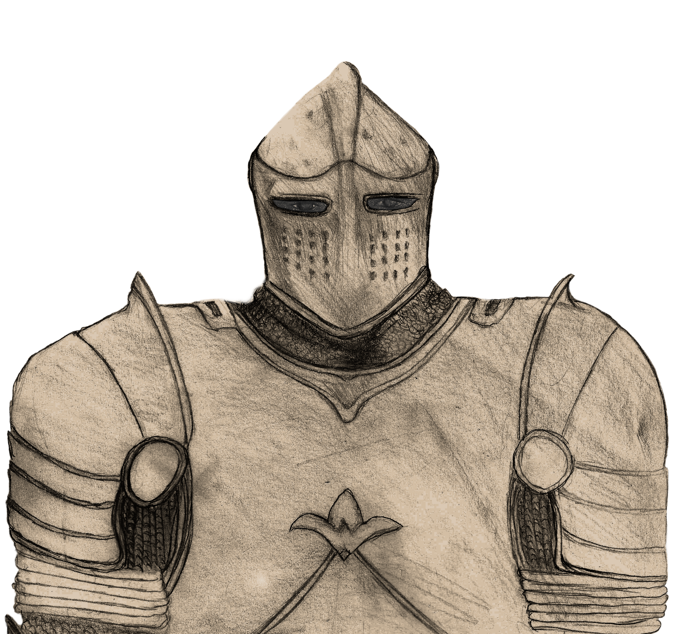
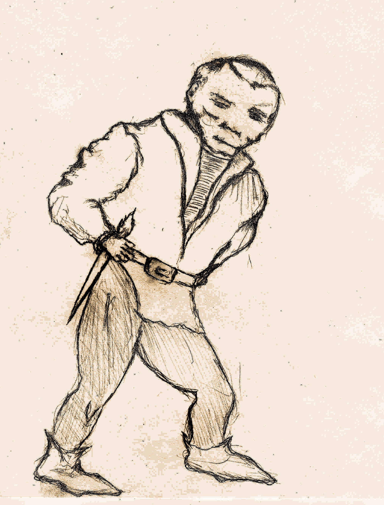

This reference guide provides an explanation on how to create your characters without need for the provided character sheets.
All characters combine their species with their profession, something the great sage Gigax calls Races & Classes.
These generic stats are what you use when creating different characters, some races & classes will require adjusting these values.
How resilient to damage your character is. The base HP for characters is (1d6+3) HP on their first level plus an additional 1d6 HP each level.
Equipping armor is vital to surviving your adventures. You subtract the damage you receive by the total amount of armor class or "AC" you have. Your maximum armor is determined by the armor you can equip yourself with. Though there are some restrictions on who can use certain gear (see races & classes).

A save is thrown when an extraordinary feat must be accomplished (such as avoiding a deadly trap).
All characters have 3 types of saves:
The baseline for all saves is 4.
When asked to roll for a save a d6 is thrown, if the value is equal to or greater than the character's save the save is successful otherwise it fails.
While saves generally require a roll of 4 or greater, some races have bonuses and penalties that will change this amount. So be sure to account for these bonuses and penalties in your character sheet.
The currency of this game is gold, and "g" is the unit. Your character starts out with 1d6*20g and will gain more gold from completing quests and selling items. You'll use this to purchase items, use services and even bribe receptive monsters into giving you information.
Your cargo capacity. Each character has 10 available inventory slots, so long as they don't fatigue.
You start out with 5 torches and rations.
There are 4 races of adventurers available:
Each has its own strengths and weaknesses and all have something valuable to contribute.

Humans are set apart by their sheer willpower.
They have no bonuses or penalties.
They can be any Class.
They are limited only by their Class.
Human determination and sheer force of will can have a direct impact on the outcome of an adventure. It can help overcome what seem to be insurmountable odds. Human will manifests itself in the form of "re-roll" dice.
"re-roll" dice allow changing the roll of any dice, at any moment in the game, for any reason. However its influence is limited:
For example if a save requires two dice, you can expend 1 re-roll dice to attempt to change either one of those two dice, but you must leave the other intact. In order to change both dice, you must expend 2 re-roll dice.
Humans start with a single re-roll dice, but gain an additional dice every two levels.
Once a re-roll dice dice has been expended, you can recover them in two ways:
Humans can expend one of their re-roll dice to cure any status ailment.
When a human character's HP goes down to 0, and they have remaining re-roll dice, they can expend one re-roll dice and recover 1d6 HP to keep going. They can choose to expend additional re-roll dice and recover additional d6 HP during this process of recovery.
When a human makes a save roll of 6, they have a +1 to saves of that nature until the encounter or event is over.
When a human lands a critical attack, for the rest of round other characters add a +1 to (character_level) die they roll.

Dextrous and magically inclined but not as resilient as humans.
Elves have a fragile body, hence they start with +2HP instead of +3HP and gain a +1 penalty to their body saves (meaning you must roll 5 or higher to succeed on a body save). However they have unusual dexterity and magical attunement, and gain a -1 boon on dex saves and also another -1 boon on magic saves (meaning rolling a 3 or higher is a successful dex or magic save).
They can be any Class.
They are limited only by their Class.
This magical affinity also makes them immune to magical compulsion and mental manipulation (such as being mesmerized or hypnotized).
Elven keen senses give them an edge when detecting secrets. Elves get a +1 to search rolls.
Elven keen senses give them an edge when wielding a ranged weapon gaining an accuracy on par with two handed weapon wielders.
Dwarfs are hardier than their peers, but not as dexterous.
Their resilient body grants them a -2 boon to body saves (meaning that rolling a 2 or greater is considered a successful body save), but their stubby limbs impose on them a +1 penalty to dex (meaning you must roll 5 or higher to succeed on a dex save).
They are limited only by their Class.
They can be any Class.
They are almost entirely immune to poison, there are rumors of certain beings able to poison dwarfs but those rumors are generally dismissed.
Dwarfs have +1 HP each level.
Dwarfs don't need to use torches to see (technically a purely dwarven party would not need torches). This can have some advantages in certain unconventional situations.

Brownies are shorter than dwarfs and about as slender as elves.
Brownies are more fragile than the other races, they take +1 penalty on body saves (meaning you must roll 5 or higher to succeed on a body save), but get a -1 boon on dex saves (meaning rolling a 3 or higher is a successful dex save).
Brownies can't be healers, however they can be any other Class.
Brownies can't use two handed weapons, but they can use single handed weapons or ranged weapons for attack.
For armor, warriors can use Chainmail, while other classes can only use a Brigandine; but no standard shields or helmets.
Brownies they are very nimble with their fingers and have a knack for locks, getting a +1 on lock-picking throws.
Additionally they’re able to engage in conversation with animals. If you have a brownie on your party, whenever you meet an animal, it may react in a non-hostile manner. Note that any animal that is "Persuadable" will accept rations as a bribe instead of money (though some might ask for both).
Their bodies are somewhat fragile starting with +1 HP instead of +3HP, and deduct a -1 HP from each level up.
Given their smaller stature they are very hard to actually hit by an opponent, starting with a +1 AC and gaining an additional +1 AC per level.
Using a bow grants them an additional 1 AC on top of ranged weapon bonuses.

Fierce and resilient damage dealing combatants.
Fighters are able to equip any weapons and armors they find.
When engaged in melee combat, Fighters can ignore one d6 roll of 1 for calculating accuracy, see attack accuracy.
When landing a successful hit, they re-roll any damage die on 1s.
Upon defeating an enemy they can strike another target that same round (two attacks on that turn).
Fighters gain an additional +3 HP on level 1, and an additional +1 HP every odd level (3, 5, etc).
When engaged in melee combat, and landing a critical attack. If the target is a "regular sized" & "non-undead" humanoid, Fighters will overwhelm their opponent knocking them violently to the ground. The target remains stunned and inactive for one round.
Mages are versatile casters capable of offensive and defensive magic. They start with two spell slots and gain an additional spell per level. As Mages level up, not only do they gain more spell slots, some of the spells in their possession also become more powerful. When casting, the slot used does not matter, what matters is the Mage’s level.
While extremely versatile and powerful, Mages require preparing ahead of time. They must first assign a known spell to a slot before it can be cast. Upon resting, Mages recover all their spells and can reassign known spells to their slots.
Mages are unable to use 2 handed weapons, and they can only equip Bringadines as armor.
Mages can use any scroll to cast a spell. However using a scroll consumes it.
Similarly, a Mage is able to use a wand if found.
Mages can learn new spells from scrolls found in their adventures (unfortunately, the ones sold in the market are only good enough for casting not studying). They learn new spells when they bring a scroll of an unknown spell to the surface.
Due to their mastery of magic, Mages can re-roll magic save die that land on one.
Healers are casters focused on defensive magic. Healers start with two spell slots and gain an additional spell per level. As they level up, not only do they gain more spell slots, some spells also become more powerful (what matters is the Healer’s level not the specific slot used). Upon resting, Healers recover all their spell slots.
Healers are able to use any armor they find, however they can't use 2 handed weapons.
Healers know all Healer spells from the start and can cast them from any slot at any given time.
Healers can use mage scrolls, however they can only use scrolls that target other party members.
Healers heal (1+character_level) HP each time they use a bandage, and gain a +(character_level)/2 bonus when using an antidote to neutralize poison.
Additionally,from level 2 onwards healers heal an additional +(character_level/2)d6 HP when using a Healing Potion.
Healers are immune to sickness and can't be afflicted by a diseased status.
Healers can combine the positive attributes of two bottles into a single bottle, though they must roll a successful magic save each time.
Healers are the only ones who can freely use curative items on others in the middle of battle.
Upon reaching level 3, a Healer has mastered sleeping potions and can use them as a localized anesthetic, relieving some of the burden of fatigue. A healer can use a sleeping potion to restore a fatigued slot (character_level) times.

Rogues are equally dexterous and deadly. They bring an equally valuable set of skills to weapon combat and to exploration.
Rogues are able to use anything they find except for plate armor.
Rogues get a +1 to search, trap and lock picking rolls.
Rogues deliver devastating sneak attacks to susceptible enemies (enemies such as undead may be immune, receiving a normal attack instead). To inflict them they must first hide, by spending a turn inactive and succeeding a dex save, then they produce a (6*character_level)d6 damage. Basically they gain full damage die plus an additional 1d6 roll of damage.
When equipped with a ranged weapon, Rogues get a +1 to their dex save when rolling for sneak attacking.
Starting at level 2, Rogues are able to use scrolls or wands with a proficiency of 1/2 their character_level. Though to use one, they must cast a successful magic save.
Revive scrolls require 2 consecutive successful magic saves to succeed.
Rogues always peer into the room they're entering, looking for signs of trouble. Hence when a Rogue is the first in the room, Monsters have a tougher time catching them unprepared for combat.
On a critical attack Rogues can deliver a deadly blow capable of finishing an opponent on a single strike. When landing a critical attack, roll against (monster_hp_dice - character_level), if the attack succeeds, you have defeated your opponent. If it fails, it will still inflict normal damage.
This attack does not affect bosses.